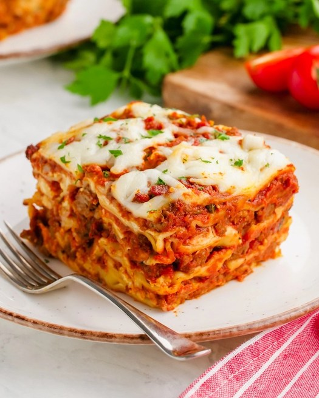

Home
Lasagna

A delicious and simple lasagna recipe.
Ingredients
- noodles
- ground beef
- spaghetti sauce
- garlic
- mozzarella cheese
- cheddar cheese
- ricotta cheese
Directions
- Boil water. Add pasta and cook.
- Preheat oven to 350F. Brown beef, season. Stir in spaghetti sauce, simmer.
- Combine cheeses, stir well.
- In a oven-safe pan, layer noodles, meet, cheese until filled.
- Bake for 30 minutes or until cheese is melted and bubbly.